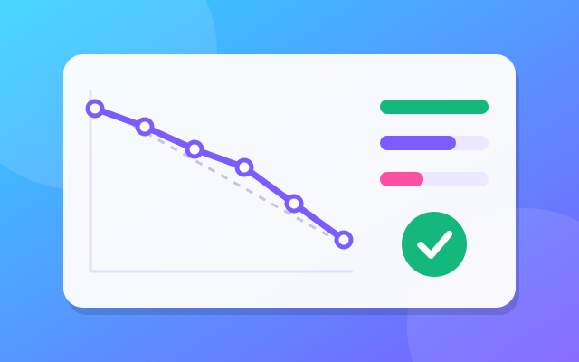
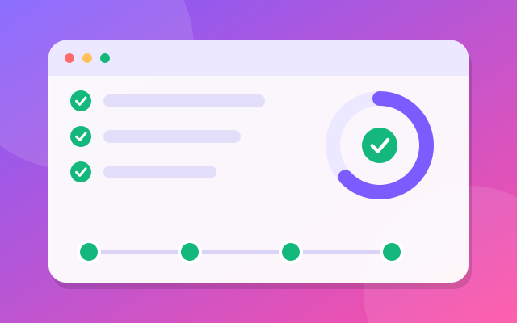
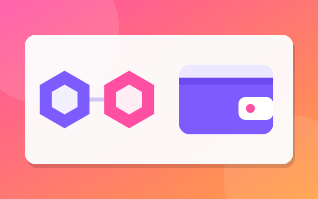
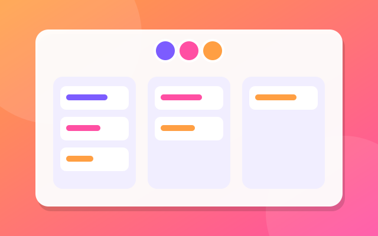

LXP (Learning eXperience Platform)
Testing LXP, NTUC LearningHub’s online learning platform, and AWB, its back-end portal used by admins, LHUB admins and trainers.
- LXP
- AWB portal
I’m Rotama Pandi Pranata. I plan, automate and lead testing so teams ship products people can trust. 7+ years in QA across fintech, maritime technology and enterprise learning.
Senior QA Engineer delivering software across fintech, maritime technology and enterprise learning platforms. I work in test automation, API testing and CI/CD, and I have led cross-functional QA teams.
I’m at home in Agile/Scrum teams, in stakeholder communication, and in making the go/no-go call.
years in software quality assurance.
less testing time after I built an automation framework.
B.Sc. Information Systems, Putera Batam University (2013 – 2017). Thesis: web-based material inventory system at PT HLN Batam.
Bahasa Indonesia, native.
English, proficient.

Testing LXP, NTUC LearningHub’s online learning platform, and AWB, its back-end portal used by admins, LHUB admins and trainers.

Client portal of a global ship management company: real-time vessel position, crew information, incident reports and port arrivals

Foundry Safe, the Safe website, and client projects Opulous, Messina and K-Prime. Tested staking, withdrawal and wallet features.

MBTI personality in an institution and DAP Warehouse Inbound Management
Tested each firmware version of printers from a Japanese electronics manufacturer against its specifications.